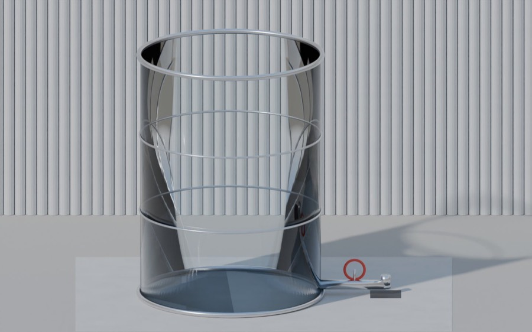

Day 1: Interpreting derivatives in context
Wed Oct 28 · CHA-3.A
The derivative gives the rate of change of the dependent variable with respect to the independent variable. Think slope: Δy/Δx.
Units
- Units of f′(x) are units of funits of x
- Units of f″(x) are units of f′units of x, for example gallons per hour per hour.
Say it in a sentence
Every interpretation needs three things: the noun (what f measures), the units, and the time.
The amount of water in the pool is decreasing at a rate of 40 gallons per hour at t = 3 hours.
Day 2: Position, velocity and acceleration
Mon Nov 2 · CHA-3.B, CHA-3.C
Position x(t). Velocity v(t) = x′(t). Acceleration a(t) = v′(t) = x″(t). Speed is |v(t)|.
| If… | Then the object… |
|---|---|
| v(t) = 0 | is at rest |
| v(t) > 0 | moves right (or up) |
| v(t) < 0 | moves left (or down) |
| v and a have the same sign | is speeding up |
| v and a have opposite signs | is slowing down |
Average velocity on [a, b] is x(b) − x(a)b − a and average acceleration is v(b) − v(a)b − a.
- At rest where the graph of v crosses or touches zero.
- Acceleration at a point is the slope of the v graph there, in units like in/s².
- Speeding up or slowing down: read the sign of v (above or below the axis) and the sign of a (graph rising or falling), then compare.
Day 3: Rates of change in other contexts
Wed Oct 28 · CHA-3.B, CHA-3.C
y′(t) is the rate of change of y(t) and tells you how y is changing.
- y′(t) > 0: y is increasing.
- y′(t) < 0: y is decreasing.
- y′(t) = 0: y isn't changing.
Two rates: in and out
Some problems give a rate in and a rate out. Net rate of change = rate in − rate out. The amount is increasing when the net rate is positive.
Day 4: Intro to related rates
Thu Oct 29 · CHA-3.D, CHA-3.E
Related rates problems have several variables changing with respect to the same independent variable, usually time.
The steps
- Read the problem carefully and draw a picture.
- Name the variables and label the picture. Write down every given rate as a derivative with units, and what you're asked to find. Watch for constants.
- Write an equation that relates the variables. Know your geometry formulas.
- Differentiate both sides with respect to t. Don't forget the chain rule.
- Plug in the numbers last and solve for the unknown rate. Check that the answer is reasonable.
The other example from class, the draining cylinder, is sheet 4 in the labs: V = 16πh, so dV/dt = 16π(−0.1) = −1.6π ft³/s.

Try it: drain the tank and watch dV/dt stay at −1.6πDay 5: More advanced related rates
Fri Oct 30 · CHA-3.D, CHA-3.E
Translate the words first
- “The height of the water is increasing 2 feet per hour” → dh/dt = 2 ft/hr
- “Water is pouring into the cone at 7 in³/min” → dV/dt = 7 in³/min
- “The radius is decreasing 1.5 inches per minute” → dr/dt = −1.5 in/min. Decreasing means negative.
Cones: get rid of a variable
When the formula has two changing variables but you only know one rate, use similar triangles to write one in terms of the other before you differentiate.
Day 6: Approximating with tangent lines
Wed Nov 4 · CHA-3.F
Near x = a, a curve looks like its tangent line, so the tangent line gives a quick estimate. This is called a local linear approximation.
Overestimate or underestimate?
- Concave up (f″ > 0): the tangent line sits below the curve, so the estimate is an underestimate.
- Concave down (f″ < 0): the tangent line sits above the curve, so the estimate is an overestimate.
- Always say why: name the sign of f″ on the interval.
f″(x) = −¼x−3/2 < 0, so f is concave down and 2.025 is an overestimate. (The calculator gives 2.0248.)
Day 7: l'Hôpital's Rule
Thu Nov 5 · LIM-4.A
If plugging in gives 0/0 or ∞/∞, then
lim f(x)g(x) = lim f′(x)g′(x)- Check the form first, and write it down. On an FRQ you must show the limit is 0/0 or ∞/∞ before you use the rule.
- Take the derivative of the top and the bottom separately. This is not the quotient rule.
- Still 0/0 or ∞/∞? Use it again.
- It does not apply to forms like 1/0 or 5/3. Just evaluate those.
Bonus: Newton's Method
Mon Nov 9 · extra, the way some calculators find zeros
Start with a guess x0 near a zero. Follow the tangent line down to the x-axis, and use where it lands as the next guess.
Review: formulas to know
Fri Nov 6 · test Tue Nov 10
No formula sheet on the AP exam, so these need to be memorized for related rates.
Side area 2πrh
Use similar triangles to link r and h
S = 4πr²
tan θ = opposite / adjacent